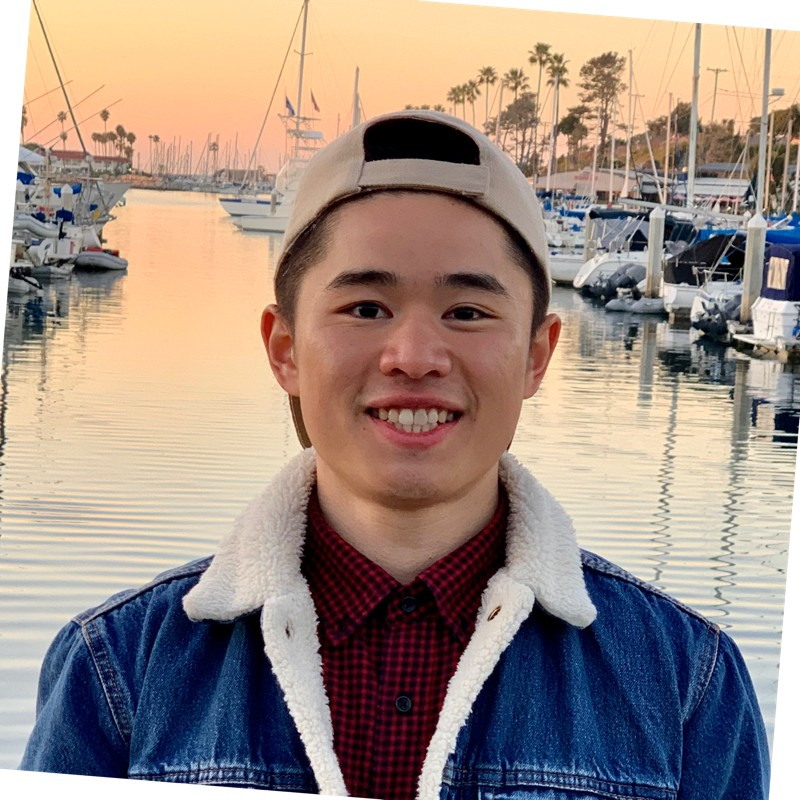
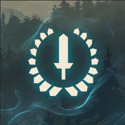
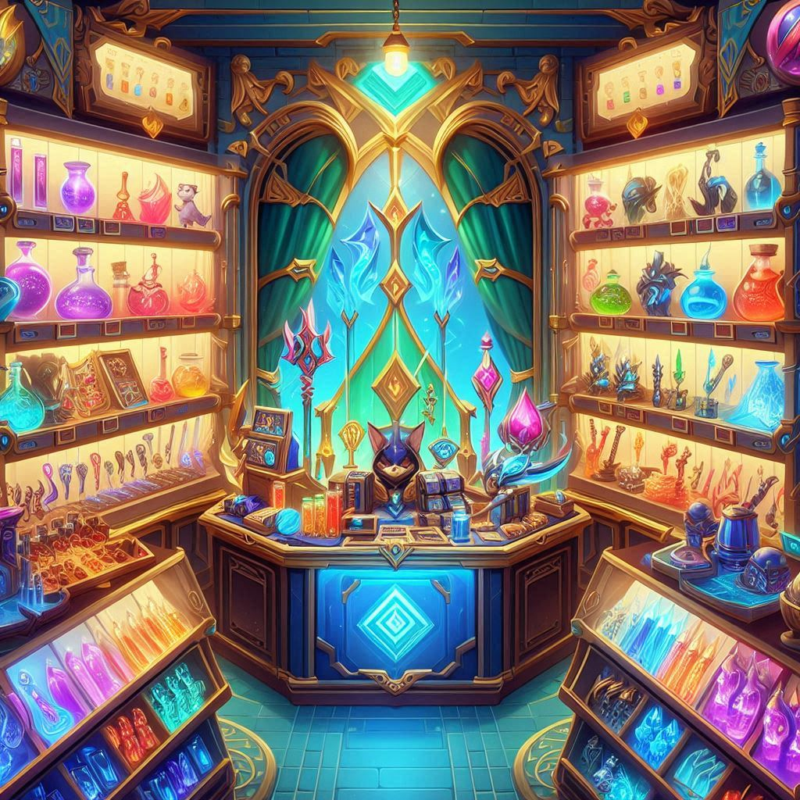
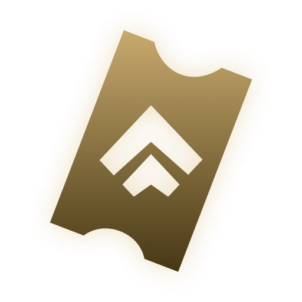
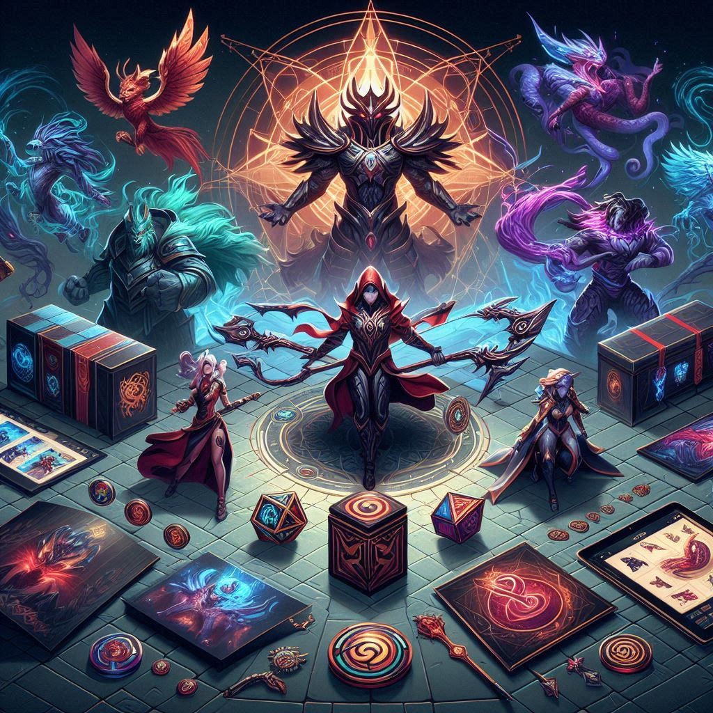
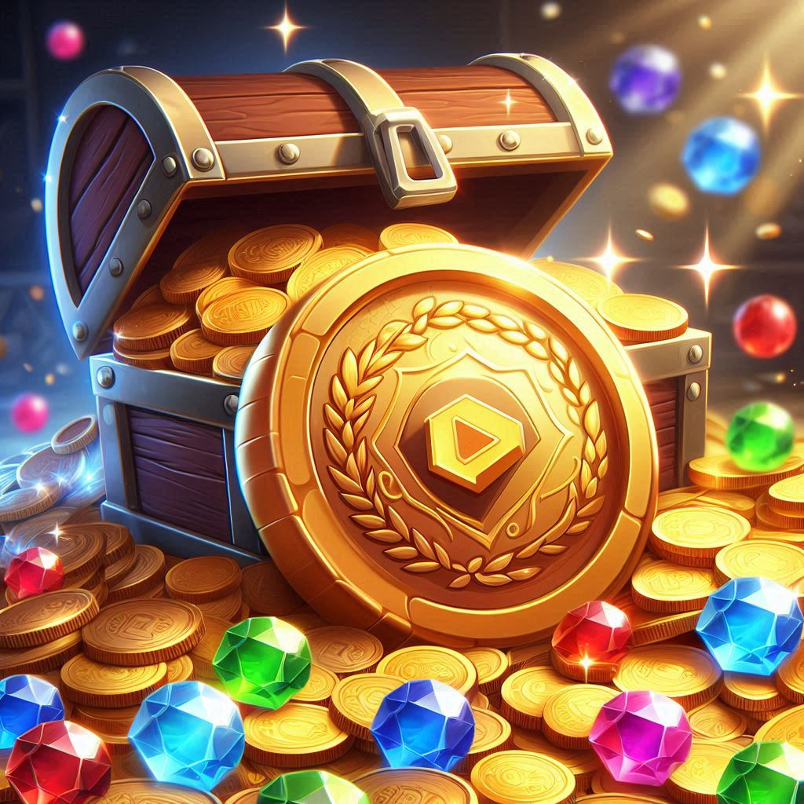
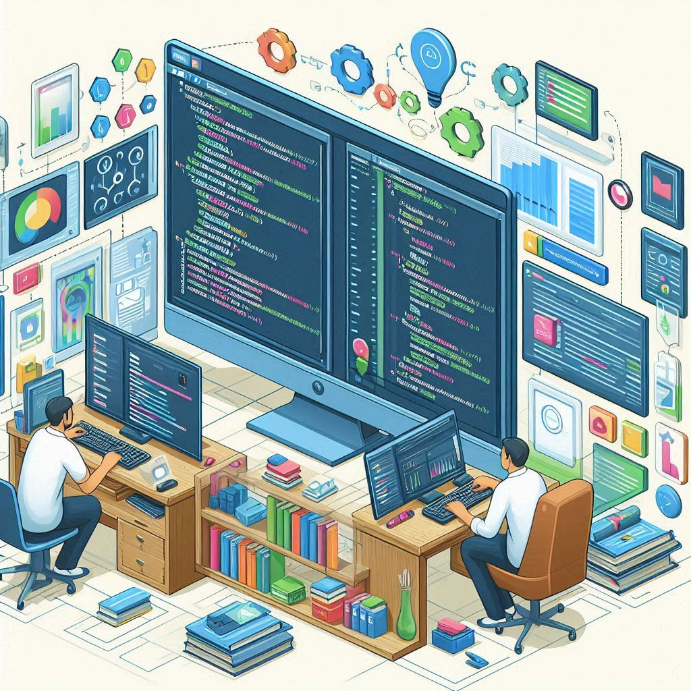
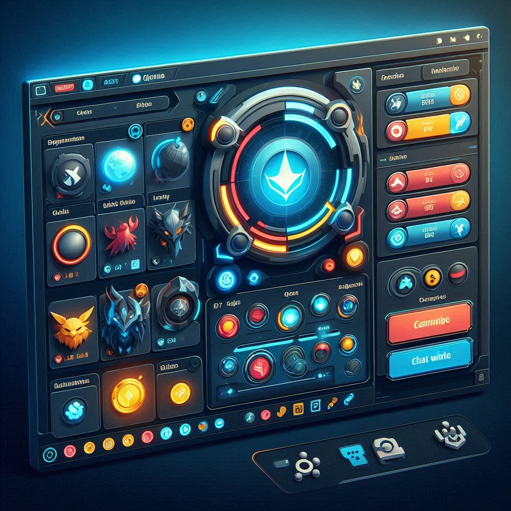
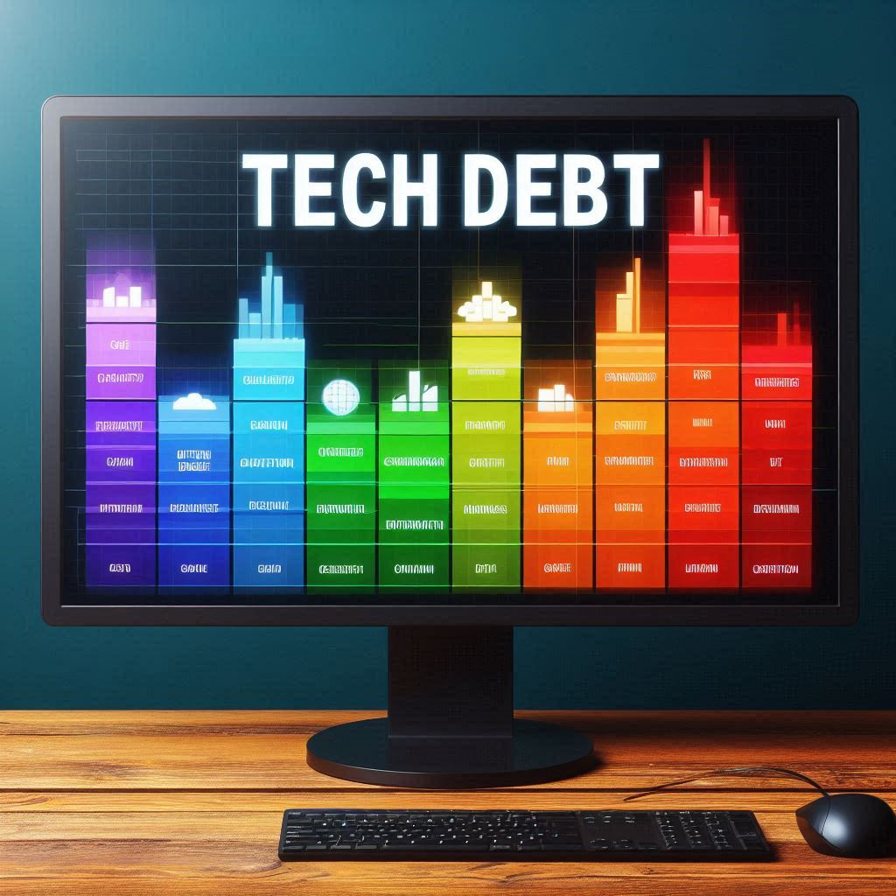
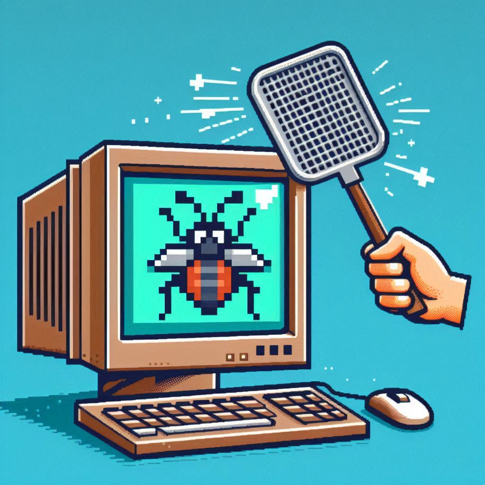

Jimmy Xie
Game Producer
Hi, I am Jimmy. As a Producer, I exercised product management and project management to deliver exceptional digital experiences and successfully led diverse teams through the entire software development lifecycle for games. I thrive on improving workflows, enhancing user experiences, and driving innovative solutions. Outside of work, I enjoy spending quality time with family, reflecting on personal growth, playing sports, and exploring new hobbies. I am always ready to tackle new challenges and create memorable product experiences for customers around the world.
ABOUT ME
Values +
- Continuous Learning. I am committed to personal and professional growth, always seeking to improve.
- Collaboration. I do my best to foster a support and an inclusive environment.
- Integrity. I do my best to uphold the highest standards of honesty and transparency in all interactions.
- Innovation. I try to push the boundaries of what is possible and embracing new technologies.
Education +
- California State University Northridge (2012 - 2017)
- Bachelor of Science, Kinesiology
Hobbies & Interests +
- Sports: I play a variety of sports casually such as basketball. I am also a big Los Angeles Lakers fan.
- Outdoors: I enjoy travelling and spending time outdoors.
- Games: I play a variety of video game genres.
Professional Experience
Game Producer - Riot Games (Feb 2023 - Jan 2024)+
- Led a Software Engineering team of 13 Software Developers and 2 Quality Engineering Leads, in partnership with a Senior Software Development Manager, through the full production cycle for 17 diverse projects.
- Launched new features supporting monetization efforts.
- Reduced cost by addressing legacy technical issues and improved service performance.
- Maintained resolution ti mes to below 3 days on average for pre-launch and post-launch issues.
- Updated workflows and launched new internal tools that reduced the amount of development time for various products from days down to less than 15 minutes.
- Drove team strategy and managed processes to foster clear communication and clarity among team members, key personnel, and product owners across assignments, project backlogs, timelines, and roadmaps.
- Drafted Product Requirement Docs, created basic UI mock-ups designs, and updated workflows.
- Identified and aligned quarterly Objectives and Key Results with business objectives in partnership with the Initiative Leadership team and Director of Engineering.
- Facilitated a smooth team reorganization, ensuring project continuity and satisfaction.
Senior Game Production Coordinator - Riot Games (Oct 2021 - Feb 2023)+
- Managed product development and launch efforts in collaboration with various cross-functional teams across multiple business units to ensure products are delivered with quality and on time.
- Successfully led the development, delivery, and after-launch support for League of Legends, overseeing the creation of 2500+ content for 16 regions and 20+ languages globally for over 50 major releases.
- Coordinated with Quality Owner and external Quality Assurance testers to maintain high standards for content quality.
- Facilitated Risk Assessments in partnership with Quality Owner to identify any potential high-priority risks and brainstorm mitigation plans to prevent risks that would delay development.
Game Production Coordinator - Riot Games (Jul 2020 - Oct 2021) +
- Innovated and delivered new quest mechanics for League of Legends’ first metagame event, achieving record engagement rates.
- Assisted the Team Producer in managing the team’s project board, optimizing the collection of team data for investor reviews, and enhancing the efficiency of team meetings.
Game Content Coordinator - Riot Games (Jun 2019 - Jul 2020)+
- Configured and managed various types of digital content to ensure engaging user experiences for League of Legends, Teamfight Tactics, and League of Legends Esports events.
- Managed release schedules and collaborated with Development teams to meet release schedules.
Receptionist - First Chinese Baptist Church Los Angeles (Apr 2018 - Jun 2018)+
- Troubleshooted IT operating systems and conducted independent research on workflow, database, media, and programs.
- Managed church mobile app and website contents to display latest church events.
- Initiated and effectively introduce projects to improve office and church working environment.
- Managed day to day administrative operations, online billing, facilities projects, supplies, and reservations.
- Operated data analysis and clearly present data trends in weekly staff meetings.
- Established and maintain interpersonal relationships with local community, members, vendors, and office staff.
Certifications+
- ICAgile Certified Professional
- ICAgile Professional - Team Facilitation
Skills+
- JSON, Javascript, HTML, CSS
- Agile: Manage project sprints, backlogs, and tasks using JIRA.
- Software Development Lifecycle: plan projects, create Product Requirement Documents, gather requirements, create designs, manage product development, test products, manage integration into Perforce and GitHub, global delivery of product, and provide post-production support.
- Management: Team resources, Roadmap, Project Schedule, Project Priorities, Risks.
- Global Product Delivery: Prepare product for release, Send product to regional partners, Ensure product is released on regional servers.
- Communication & Collaboration: facilitate conversations with third party partners, regional partners, development teams, and leadership team.
- Presentations: share team updates, team metrics, sprint progress, and key results to leadership team and department-wide show-and-tells.
- Scrum: Hold daily scrum rituals, create User Stories, facilitate backlog refinement, kickoff sprints, and perform sprint retrospectives.
Projects

In-Game Missions

In-Game Store

Event Shop

Metagames

Currency Top Up
Service Migration
Service Maintenance

Content Authoring Tools

Content Display
Name Change

Tech Debt
